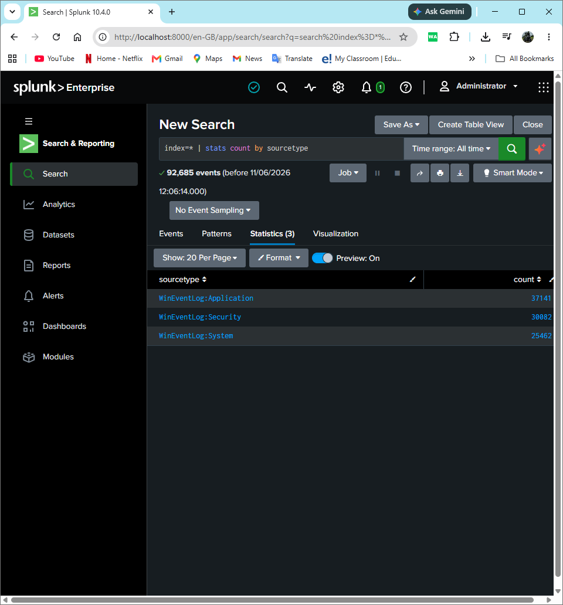
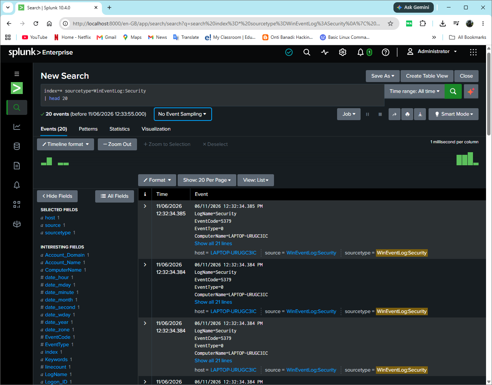
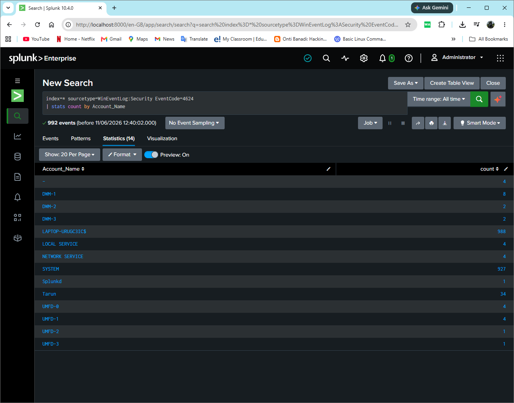
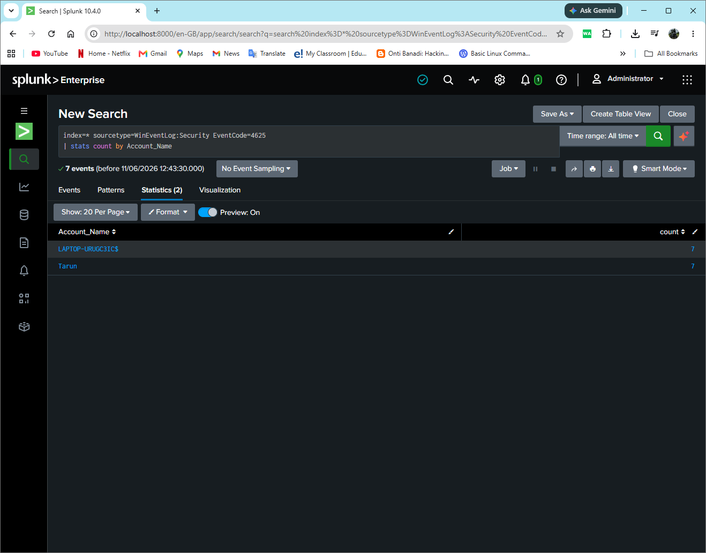
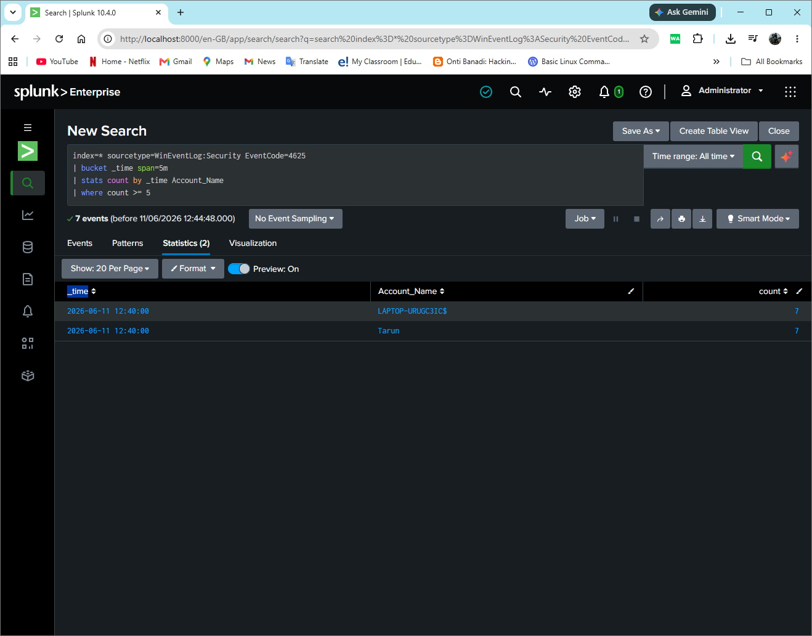

Built a Home SOC Lab using Splunk Enterprise to simulate real-world Security Operations Center (SOC) monitoring and detection workflows. The lab focuses on Windows Security Event monitoring, authentication analysis, SPL query development and threat detection.
⬅ Back to PortfolioSplunk Enterprise • Windows Event Logs • SPL (Search Processing Language) • Authentication Monitoring • Threat Detection • Security Monitoring
Splunk Enterprise successfully ingesting Windows Security, System and Application event logs for centralized monitoring.

Verification of Windows Security Event collection and field extraction within Splunk.

Authentication monitoring using Windows Event ID 4624 to analyze successful login activity.

Detection and investigation of failed authentication attempts using Windows Security Event ID 4625.

Developed an SPL-based brute-force detection use case identifying multiple failed login attempts within a five-minute period.

Successful Login Monitoring
index=* sourcetype=WinEventLog:Security EventCode=4624
| stats count by Account_Name
Failed Login Monitoring
index=* sourcetype=WinEventLog:Security EventCode=4625
| stats count by Account_Name
Brute Force Detection
index=* sourcetype=WinEventLog:Security EventCode=4625
| bucket _time span=5m
| stats count by _time Account_Name
| where count >= 5
SIEM Monitoring • Splunk Enterprise • Log Analysis • Threat Detection • Authentication Monitoring • Security Monitoring • Incident Investigation • SPL Query Development • SOC Operations